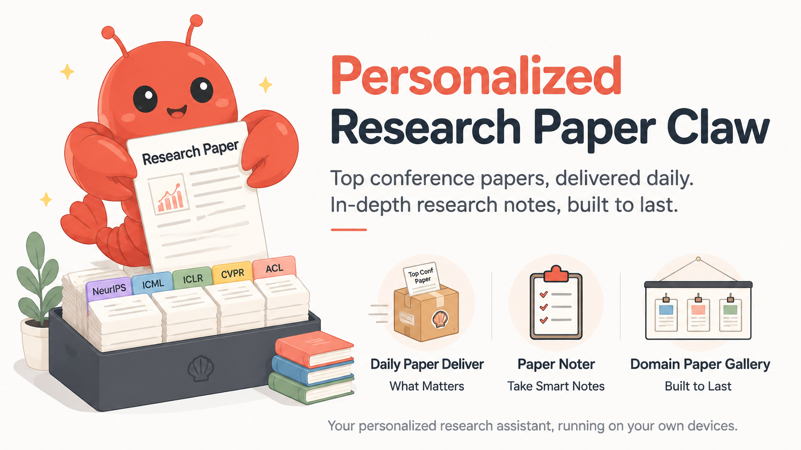

LOCAL-FIRST RESEARCH AGENTDISCOVER · READ · BROWSE

CHOOSE A WORKFLOW TO START THE INTERACTIVE DEMO
Personalized briefing
今天有 6 篇，
真正贴近你的研究脉络。
今天不是又一批“更清晰的视频生成”。真正的分水岭已经变成：状态能否被极致压缩、物理是否可控，以及 agent 是否真的会使用模拟结果。最值得追的是 DeltaWorld、DreamDojo 与 From Word to World。